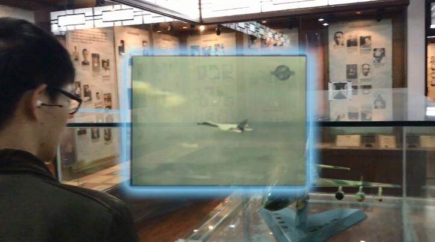
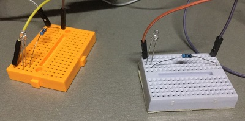
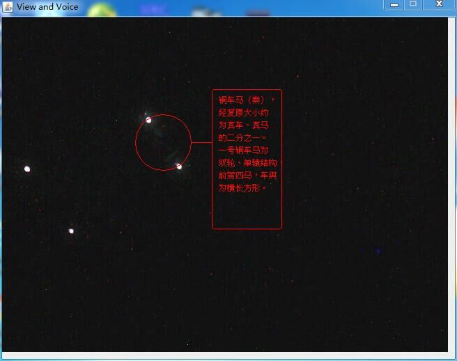
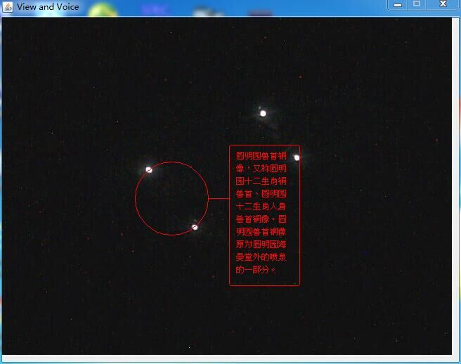

这学期人机交互大作业是围绕南大校史馆展开的，要求设计一种校史馆内使用的人机交互技术，提升用户体验。
我们组设计的是用AR（增强现实）技术来丰富校史博物馆的展现。具体来说就是——参观者带上一种眼镜，长时间（比如超过3秒）观察一个展品，那么镜片上就会显示该展品的详细介绍信息，同时耳机中播放语音讲解。
这里有我们的视频，演示了设想中该眼镜的使用场景，一起来看吧~
根据自己的网速选择要看低清的还是高清的：
如同视频中的样子：


看完视频应该就懂了吧。
那么怎么实现呢？我的设计是分两个部分——红外标签和摄像头。每个展品的两边都安装上一个红外线LED，红外LED在单片机的驱动下以一定的规律闪烁，其闪烁规律遵循一套编码规则，向外表达这个展品的编号。而摄像头捕捉到红外LED的闪烁之后，按照同一套规则解码，就可以得到某个红外LED所表达的展品编号。把相同编号的两个红外LED构成一对，然后以（以他们为顶点的线段）（帮你断句 嗯~）为直径画圆，这个圆就圈出了该展品。既然有了展品在视野中的位置和编号，那么再去查询其介绍，显示文字介绍并播放语音讲解即可。
这里有几个疑惑点需要阐明：
（1）为何使用红外LED？原因是红外线对人眼不可见，但是对摄像头可见，而且可以通过红外滤波片，让摄像头只看见红外线而忽略所有可见光的干扰。
（2）真实使用时用户可能会有晃动，如何应对？用户的晃动会导致同一个红外LED在前后两帧中的位置不同，但是如果帧间隙足够小，那么这种位移也会足够小。那么就可以定义一个阈值，比如50像素，如果后一帧中的某个点和前一帧中的某个点距离小于50像素，那么就认为它们是同一个点。
（3）红外LED所遵循的编码是何种编码？考虑到摄像头帧频比较低的因素，红外LED所遵循的编码体系中，电平（这里就是明灭状态）跳变次数越少越好。这让我想到了我之前自己发明的编码方式，见《针对51单片机的315Mhz无线模块协议与软件的改进》。
还记得钢铁侠那个能自动锁定目标、调取资料的作战服吗？由于财力上的限制，我无法用真的AR眼镜来做，所以自己做了原型，用一副眼镜绑上一个摄像头~不过最终图像展示在电脑上，而不是我的镜片上~
这是戴上眼镜的我：
这是由单片机控制的红外LED：

这是摄像头拍到的正在闪烁的红外LED和算法识别出来的”展品“：


要是能实现这样就碉炸天啦：
这里还有我们的宣传海报，里面有联系方式，如果有兴趣可以联系我们~